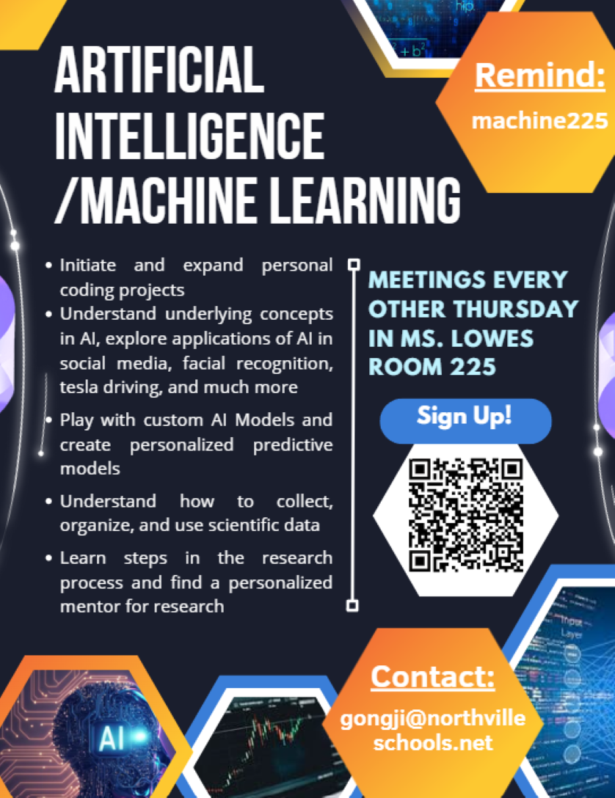

Our club aims to simplify the often-overcomplicated field of artifical intelligence and machine learning by making the learning experiance as fun and interactive as possible. We meet every other Thursday in Ms. Lowe's room 225 from 2:30-3:00. During meetings, we play with pre-made models and experiment with outputs when given different inputs, exploring the factors that effect the performance of a predicitive model. We explore the applications of AI in various technologies, including social media, facial recognition, self-driving, and much more. Members will learn how to initiate and set-up their own coding projects and build personalized machine learning models from scratch. AI/ML Club also strives to bring excitement to the various applications of artifical inelligence and machine learning through its applications in scientific research. Our club hopes to assist members in finding their own research opportunities and find ways of applying machine learning to both their individual research as well as personal projects. If you are interested, you can join the remind and sign up to join the emailing list.
Official Club Flyer
Recently, Artifical Intelligence has recieved massive attention and usage in main-stream media, and major companies and governments all throughout the world are utilizing this new resource. However, majority of users are unaware of the fundamentals behind AI and even the potential dangers within the field. The introducion of the Transformer in 2017 gave an effective way for algorithms to memorize and refer to historical information. Since then, the field of AI exploded, with the release of powerful Large Language Models such as ChatGPT and various implementations to robotics. Every year, frontier AI software development companies such as Meta, OpenAI, and Nvidia release trained models for public use. These models are incredibly expensive to train, taking hundreds of thousands of GPU power and months of training duration. Naturally, many technology companies rely on the basis of these pre-trained models to assist in production and research. The problem lies in the reliance on a select monopoly of AI development companies that may be unethically adding bias to either data or the model-building process. For example, companies could purposefully add untrue biases to political topics and use corrupted, copyright data as input in training. Worse, companies may produce faulty, incorrect results to sway the public AI/ML Club hopes to explore some of these issues in AI, better understand the underworkings of how AI algorithms are trained, and avoid the dangers prevelant throughout AI technology.
Machine Learning is a topic that is so essential across all fields of STEM, yet, many students have never heard of it. In a nutshell, Machine Learning incorporates any technique that requires adjusting a pre-coded program to best predict the outcomes of new scenarios. While Artifical Intelligence aims to use math and memory to mimick the way humans learn, Machine Learning focuses on discerning and identifying patterns in data and output a result based on said patterns. By measuring the output of our program, we can adjust the model-building proccess to achieve optimized results. How could a machine, an inanimate object, see patterns in a way that humans can? Suprisingly, we can 'train' a program to act in a way that we desire. Like a child, we can 'reward' a machine for a desirable behavior and 'punish' it for an undesirable behavior. When we do this over a long period of time, our machine can be 'trained' to always recite good behavior. The most exciting aspect of machine learning is that, like a child, our newly adjusted or 'trained' program can recite good behavior even in completely new situations the program has never seen before. This means that we can use this concept of 'Machine Learning' to make predictions for pretty much everything- from predicting the weather to predicting the correct response through chatGPT. Interestingly, it is quite difficult to accurately measure the performance and reliability of model-building methodogy. Formally introduced by Proffesor Juyang Weng, 'Post-Selection' is an prominent issue that many Machine Learning algorithms suffer from. Read the newsletter here for more information.
In today's world, data is perhaps the most valuable resource. There is a reason why all the world's largest technology and social media platforms take extreme measures to collect your personal data, whether you know it or not. Why so? It is because data is fundamental in making future predictions. The more data that is available and usable, the better predictions we can make. For example, a social media app can use your liked videos, time spent per video, frequency of usage, and even mutal connections to strategically show you videos of interest. Even though data collection requires much time and effort, once obtained, can be used to make powerful, profitable predictions. It turns out that Machine Learning and data management go hand in hand. Data that is properly managed can be fed into a 'trained' program which can output an accurate result. These results can be used to make predictions for real-world events that have not yet happend. If you are curious of the different branches of machine learning and its intersection with AI and data science, take a look at the link on the right.
Due to the vast use cases for machine learning, many fields of STEM research rely on machine learning to make progress. An example of this is in physics and biology research. Both disciplines rely on powerful machine learning algorithms to predict what will happen in new situations. In physics, that could be predicting the behavior of a complex system. In biology, that could be pattern recognition and classification. In any scenario, most (if not all) theoretical STEM research use some aspect of machine learning to make calculations. At NHS Machine Learning Club, we aim to guide memebers in their understanding of machine learning and its use cases in each step of the research proccess.

Jackson Gong
President
Junior at Northville High School; Passionate writer and leader; Experianced researcher and coder; Multiple-Time Coauthor and Writer for Scientific Literature in AI, Data Science, and Machine Learning; Won honors at various math and physics competitions at the national level; Varsity Swim
*Executive Positions are not Permanent and May Change


Contact Us!


Questions? Email: gongji@northvilleschools.net